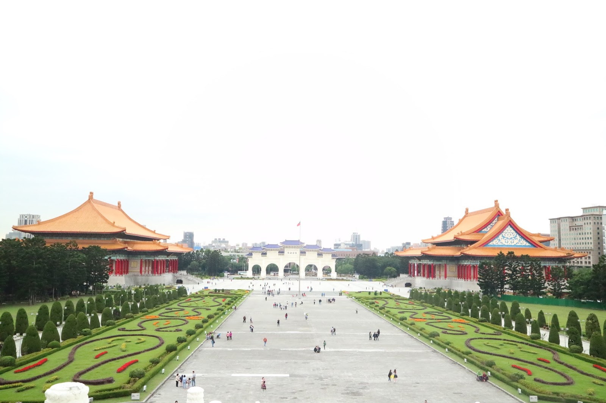

Taipei
Tiapei 101

Located in the finest district Taipei has to offer, TAIPEI 101 is the largest engineering project ever in the history of the Taiwan construction business. Supported by a dozen or so domestic businesses, the TFC Corp. was fortunate to have local and international experts in charge of the planning, and world-class architect C.Y. Lee was responsible for the design of the project. The design transcends the unit-body concept and is based on the Chinese number 8, a numeral long considered lucky in Chinese culture. Eight-floor structural units are connected one by one on top of each other to form the whole. This kind of rhythmic aesthetic is new to skyscrapers. The sectional TAIPEI 101 employs a Mega Structure System for disaster and wind damage prevention. As every eight floor constitutes an autonomous space, wind effects on the surface seen in high-rise buildings are eliminated. The design of the foundation guarantees pedestrian safety and comfort. Resembling the flexible yet persistent bamboo that rises into the sky, the building is a reflection of traditional Chinese building philosophy. Inclining 7 degrees inwards, the structure increases in size as it gets higher. The transparent and non-reflective curtain walls are energy efficient and heat reflective, enabling those in Taiwan's tallest building to have a clear view of the world around them. High-tech materials and innovative illumination creates a see-through effect with transparency and clarity that facilitates the harmony between the building and its natural environment. About TAIPEI 101 Observatory At 382 meters above the ground the 89F Observation Floor offers visitors a commanding view of the city and Taipei Basin at all directions. The damper, weighing 660 metric tons, is also exhibited at this level. The Observatory is equipped with high-power binoculars, drinks bar, image services, pre-recorded audio tour guides in seven languages, & souvenir shops. About TAIPEI 101 MALL Taiwan's premier international shopping destination, featuring luxury goods, fashions, and fine dining. Taipei 101 Mall has gathered together the finest in fashion and refined dining from around the world. Our customers' wishes are thoughtfully catered to in a world-class space that brings together sensory delights, a wonderful atmosphere, and architectural aesthetics, giving form to limitless imagination. Here, you can enjoy your shopping experience in comfort and total relaxation. Taipei 101 Mall joins the ranks of world-class shopping districts such as New York's Fifth Avenue, Paris' Champs-Elysees, and Rome's Via Condotti, with flagship stores and all-new design concepts to offer consumers the richest array of shopping choices. Whether from the perspective of its high-end goods, design flair, trend-setting lifestyles, or sumptuous cuisine, Taipei 101 offers consumers 101% fresh choices in fashion and dining from around the world.
Chiang Kai-shek Memorial Hall
The 1970s monument to Taiwan’s former military and political leader Chiang Kai-shek is set in a quiet central city park on the east side of Memorial Hall Square. Most tourists come to see the changing of the guard in the main hall, where there is a large statue of Chiang Kai-shek. The ceremony happens on the hour from 9am to 5pm.